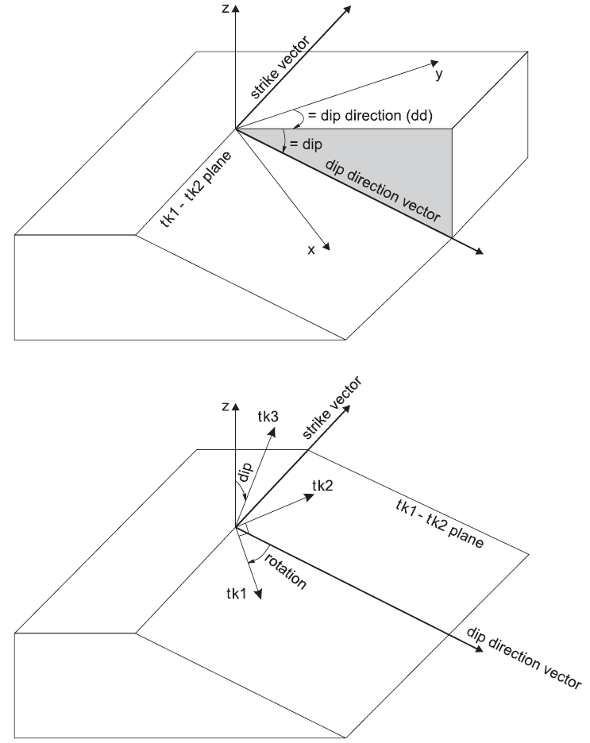

流固相互作用的计算模式
孔隙压力分析所需计算模式和命令，取决于网格是否配置流体流动，即是否已指定 配置流体计算模式（model configure fluid） 命令。
指定 配置流体计算模式（model configure fluid） 后，流动计算可独立于力学变形计算进行，也可与其耦合。
也可以不为网格配置流体流动，而使用 FLAC3D 进行边坡稳定性分析等简化非耦合流固计算。在适用情况下，该选项比流体流动配置求解更快。
网格未配置流体流动（Grid Not Configured for Fluid Flow）和网格已配置流体流动（Grid Configured for Fluid Flow）对应这两种可能。为方便使用，下述所有命令均汇总于本节末尾的流体流动分析输入说明（Input Instructions for Fluid-Flow Analysis）。
网格未配置流体流动
如果未发出 配置流体计算模式（model configure fluid） 命令，则不能进行流体流动分析，但仍可在网格点赋予孔隙压力。在这种计算模式下，孔隙压力不变；但使用塑性本构模型时，由有效应力状态控制的破坏仍可能发生。
可通过带梯度的 单元网格点初始化孔隙压力（zone gridpoint initialize pore-pressure） 命令，或 单元水平面（zone water plane）（或 单元水集合（zone water set））命令，在网格点指定孔隙压力分布。
使用 单元水平面（zone water plane） 命令时，程序自动计算给定地下水位以下的静水孔隙压力分布。此时还必须指定流体密度（单元水密度（zone water density））和重力（设置重力命令（model gravity））。可通过 单元列表流体密度（zone list fluid-density） 命令输出流体密度值和地下水位位置；如果地下水位由 单元水集合（zone water set） 或 单元水平面（zone water plane） 命令定义，还可以绘制地下水位。
两种情况下，网格单元孔隙压力都通过网格点值平均得到，并用于推导本构模型所需的有效应力。在此模式下，计算体力时不会自动考虑流体存在，因此用户必须分别为地下水位以下和以上赋予介质湿密度和干密度。命令 zone gridpoint list pore-pressure 和 单元列表孔隙压力（zone list pore-pressure） 分别输出网格点和网格单元孔隙压力。plot add zone contour pore-pressure 绘制网格点孔隙压力等值线。
此模式的简单应用示例，见问题求解部分的水的影响（The Effect of Water）主题。
网格已配置流体流动
给定 配置流体计算模式（model configure fluid） 命令后，可进行瞬态流体流动分析，孔隙压力和潜水面均可变化。孔隙压力在网格点计算，网格单元值通过平均获得。配置流体计算模式（model configure fluid） 模式既可进行有效应力计算（静态孔隙压力分布），也可进行不排水计算。此外，还可进行完全耦合分析：孔隙压力变化产生变形，体积应变又使孔隙压力演化。
网格配置流体流动时，用户必须在地下水位上下均赋予干密度，因为 FLAC3D 会在体力计算中考虑流体影响。
在 配置流体计算模式（model configure fluid） 模式运行时，必须为网格单元赋予流体流动模型。通过 指定流体各向同性本构模型命令（zone fluid cmodel assign isotropic） 命令规定各向同性流动，通过 指定流体各向异性本构模型命令（zone fluid cmodel assign anisotropic） 命令规定各向异性流动。使用 单元流体本构模型指定空（zone fluid cmodel assign null） 命令为网格单元赋予不透水材料。请注意，力学上设为空的网格单元，不会自动在流体流动中设为空。
流体性质赋予网格单元或网格点。网格单元流体性质包括各向同性渗透率、孔隙率、Biot 系数、不排水热系数和流体密度。除流体密度外，网格单元流体性质通过 单元流体属性（zone fluid property） 命令赋予；流体密度通过 单元初始化流体密度（zone initialize fluid-density） 命令赋予。（注意，流体密度也可通过 单元水密度（zone water density） 命令全局指定。）
各向同性流动使用 permeability 性质关键字指定渗透率。各向异性流动使用 permeability-1、permeability-2 和 permeability-3 指定三个渗透率主值，方向由 dip、dip-direction 和 rotation 定义。渗透率主方向对应 \(k_1\)、\(k_2\)、\(k_3\)，构成右手系。性质 dip 和 dip-direction 为定义 \(k_1\) 和 \(k_2\) 的平面的倾角和倾向角。倾角从全局 \(xy\) 平面量起，向下即 \(z\) 负方向为正。倾向角是 \(y\) 正轴与倾向向量在 \(xy\) 平面上投影的夹角，从 \(y\) 轴顺时针为正。性质 rotation 是 \(k_1\)-\(k_2\) 平面内，\(k_1\) 轴与倾向向量间的旋转角，从倾向向量顺时针为正。见图 1（Figure 1）。


图 1：渗透率张量主方向的定义。
使用 biot 关键字赋予 Biot 系数，使用 porosity 关键字赋予孔隙率。若未指定，默认 Biot 系数 = 1，孔隙率 = 0.5。
网格点流体性质通过 zone gridpoint initialize 命令赋予，包括流体体积模量、Biot 模量、流体抗拉限值和饱和度。每个网格点性质也可以指定空间变化。
表 1（Table 1）汇总各种性质的指定方式。流体性质的进一步说明见流体流动分析的性质与单位（Properties and Units for Fluid-Flow Analysis）。
在 配置流体计算模式（model configure fluid） 模式中，流体可压缩性以两种方式之一定义：1）指定 Biot 系数和 Biot 模量；或 2）指定流体体积模量和孔隙率。第一种情况考虑固体颗粒可压缩性，不可压缩颗粒的 Biot 系数设为 1。第二种假定固体颗粒不可压缩（见Biot 系数与 Biot 模量（Biot Coefficient and Biot Modulus））。
网格单元性质可用 单元流体列表属性（zone fluid list property） 命令输出，网格点性质可用 zone gridpoint list 命令输出。流体密度及地下水位位置（若已指定）可用 单元水列表（zone water list） 命令输出。流体流动性质可绘为等值线图。对于各向异性流动，可使用网格单元性质关键字 permeability-xx、permeability-yy、permeability-zz、permeability-xy、permeability-xz 和 permeability-zz，绘制和输出渗透率张量的全局分量。请注意，这些全局分量不能直接初始化。
在 配置流体计算模式（model configure fluid） 模式下，网格点孔隙压力初始分布的赋予方式与非 配置流体计算模式（model configure fluid） 模式相同，即通过 单元网格点初始化孔隙压力（zone gridpoint initialize pore-pressure）、单元水集合（zone water set） 或 单元水平面（zone water plane） 命令。可用 单元网格点固定孔隙压力（zone gridpoint fix pore-pressure）（或 单元网格点自由孔隙压力（zone gridpoint free pore-pressure））命令，在选定网格点固定或释放孔隙压力。可用 施加单元井命令（zone apply well） 命令施加流体源与汇。各种条件的说明见流体流动边界和初始条件（Fluid-Flow Boundary and Initial Conditions）。
流体流动求解由 单元流体活动（zone fluid active） 开启（on） 和 求解模型（model solve） 命令控制。有若干关键字可辅助求解。例如，单元流体活动（zone fluid active） 开启（on） 或 关闭（off） 可开启或关闭流体流动计算模式。这些命令和关键字的应用，取决于流体流动分析所需的耦合程度。求解纯渗流和耦合渗流问题（Solving Flow-Only and Coupled-Flow Problems）介绍各种耦合程度及建议求解流程，并说明从纯渗流到耦合力学渗流计算的应用示例。
流体流动分析结果以多种形式提供。命令 zone gridpoint list pore-pressure 和 单元列表孔隙压力（zone list pore-pressure） 分别输出网格点和网格单元孔隙压力。使用 单元历史孔隙压力（zone history pore-pressure） 命令，并分别指定 source.gridpoint 和 source.zone，可监测网格点和网格单元孔隙压力历史。对于瞬态计算，通过 模型流体总时间历史命令（model history fluid time-total） 命令监测流动时间，即可绘制孔隙压力随实际时间变化的曲线。plot add zone contour pore-pressure 绘制网格点孔隙压力等值线，plot add zone contour saturation 绘制饱和度等值线，plot add flow 命令绘制比流量向量。配置流体计算模式（model configure fluid） 计算模式的一般信息由 模型流体列表（model fluid list） 命令输出。若干流体流动变量可通过 FISH 访问，列表见流体流动分析输入说明（Input Instructions for Fluid-Flow Analysis）。有一个与网格相关的变量 节点流量（gp.flow） 只能通过 FISH 函数访问，对应网格点净流入或流出量。对固定孔隙压力边界上的这些流量求和很有用，可得到系统总流出或流入量。
| 这些内容对您有帮助吗？… 版权与免责声明 |
FLAC3D © 2019, Itasca | 原文更新于 2020 年 10 月 8 日 |